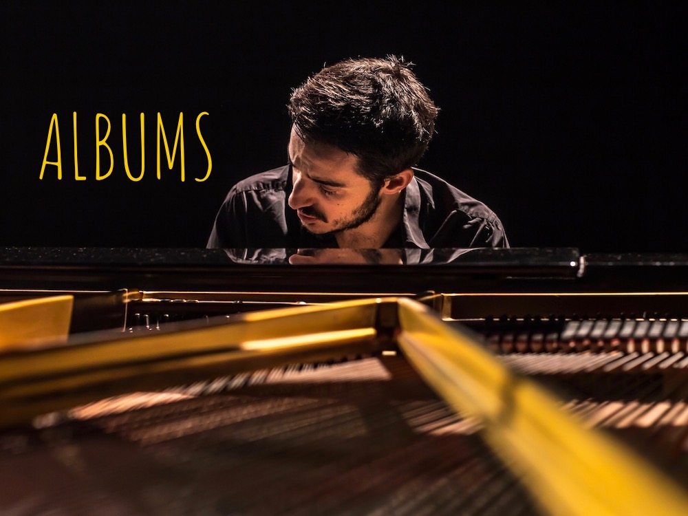
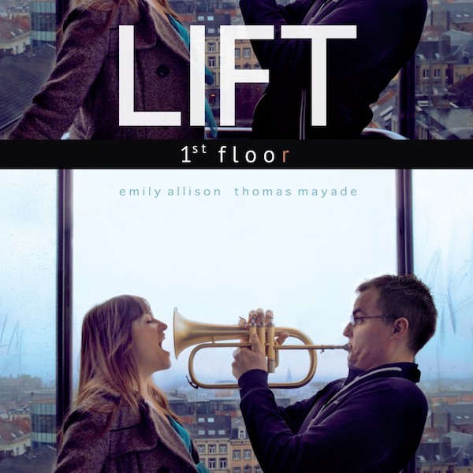

à propos
Dorian est un pianiste de jazz français basé à Bruxelles.
Amoureux de styles musicaux polymorphes, il se produit dans divers projets aux styles très divers avec diverses personnes, dans des endroits divers.
Et le tout à divers moments.
Il part et repart (tel un mars) vers de nouvelles perspectives d’expérimentation musicale armé d’un appétit glouton de découverte jamais rassasié.
presse
voir tous les articlesDisque du moment
Jens Maurits Orchestra
They Do it For a Reason

La Vidéo du moment
L'audio du moment
Prenons donc un moment pour réfléchir à 'qu'est-ce qu'un moment?

Albums
En attendant qu’un système d’achat en ligne soit mis en place sur ce site, si vous voulez vous procurez un disque envoyez tout simplement un mail à info@doriandumont.com
Il vous sera délivré promptement.
(les tarifs sont indiqués dans les infos des albums)
Jens Maurits Orchestra
They Do it For a Reason
CD + Livret
suite 2016
Jens Bouttery: batterie, compo
Daan Milius: texte
Lisa Gambey: livre
Benjamin Sauzereau: guitarre
Niels Van Heertum: euphonium
Rik Sturtewagen: violon
Lennart Heyndels: violoncelle, contrebasse
Joris Lindemans: violoncelle
Lucas Kramer: la bestia
audio:
Migration
trailer:
ici
Un lien pour acheter le disque : … à venir (voir plus haut)
(tarif 20€)
Presse :
Want het is pas dan, als je meegaat op die trektocht via precies uitgevoerde passages, met chaos flirtende momenten én ambientgetinte stromen, dat je je gewaar wordt van de verhalende boog die er in steekt, van de hypnotische kracht van sommige episodes en het opduiken van de stoorzenders, waarmee ze meer dan eens doen denken aan de helden van het ICP Orchestra. En dat zorgt ervoor dat de indrukken voortdurend wisselen; het ene moment kinds, lieflijk, dartel, absurd. Even later bedrukt, mysterieus, rafelig, uitnodigend...
Revue par Guy Peters, Enola Magazine 06.07.2016
'Episode 1' zet Satie-achtig aan met een smachtende viool en een schitterende Niels Van Heertum op euphonium. 'Endorphins' wisselt percussie en strijkpartijen af. Andere stukken zijn meer klankcollages, soms ontwrichtend dan weer swingend...
Review Karel Van Keymeulen, De Standaard 29.06.2016 ★★★★
Het eindresultaat: een ontwrichtende luisterervaring waarbij licht epische grandeur al snel plaats moet ruimen voor de meest vreemdsoortige geluidscombinaties en natuurreferenties. Feeëriek en filmisch maar ook bijwijlen heel verontrustend en kervend...
Review Georges-Tonla Briquet, Jazzmozaïek 06.2016 ★★★★★
C’est tantôt hypnotique, tantôt déjanté, tantôt lyrique, tantôt débridé. Avec des sonorités très réussies, le Jens Maurits Orchestra raconte une histoire. Avec des péripéties, des emballements, des moments de calme, d’autres d’énervement. Ça suscite une belle écoute chez l’auditeur, qui veut connaître le reste de l’histoire et profiter de tous ses épisodes.
Review Jean-Claude Vantroyen, Mad/Le Soir 29.06.2016 ★★★
Bouttery blijkt een volwaardig componist en doorstaat de vergelijking met veel hedendaags gecomponeerde muziek met glans. Een componist ook die de mogelijkheden van dit tentet optimaal benut en de rijke orkestratie maximaal uitbuit.
Review by Ben Taffijn, Draai Om Je Oren, 27.01.2017
Philémon, le chien qui ne voulait pas grandir
Philémon, le chien qui ne voulait pas grandir
suite 2016
Benjamin Sauzereau: guitare
Mathieu Robert: sax soprano
Doorian Dumont: piano
Benoît Leseure: violon
Nicole Miller: algo
Annemie Osborne: violoncelle
audio:
Eb
video:
Ouvert/Fermé
Un lien pour acheter le disque : … à venir (voir plus haut)
(tarif 15€)
Presse :
Mêler des cordes et du jazz, c’est un pari que beaucoup de musiciens osent tenter. Souvent, le défi est raté : trop suave. Ici, c’est totalement réussi.
Parce qu’il ne s’agit pas d’accompagner les mélodies jazzy mais de faire partie intégrante de la musique de Philémon…
Revue par Jean-Claude Vantroyen, Mad/Le Soir 11.05.2016 ★★★
Avec ce mélange de cordes et d’instruments plus jazz, le groupe propulse vers le public une sonorité pleine, chaude, sensuelle, soudain traversée de grincements de cordes à la Penderecki, de pizzicatos très tango ou bastringue au piano, d’accords veloutés à la guitare, d’échappées vertigineuses du sax, de mélodies qui s’échappent…
Interview par Jean-Claude Vantroyen, Le Soir 11.05.2016
Opvallend op dit album is het verhalende, bijna filmische element. De strijkers spelen daarbij een belangrijke rol en zorgen op menig moment voor een klassieke sfeer.
Revue par Ben Taffijn, Draai Om Je Oren, 27.01.2017
Un sextet qui enchevêtre écriture et improvisation, rigueur et flâneries dans un univers poétique, mêlant les codes du jazz et de la musique de chambre.
La formule résolument acoustique correspond à un concept raffiné qui, en musique et sans hermétisme, parle le langage des poètes.
http://www.plurio.net/5/outputlang,fr/eid,774388/agenda.html
Blue Monday People
Empire of Matches
Talia asbl 2016
François Vaiana: chant
Jens Bouttery: batterie
Dorian Dumont: piano
Benjamin Sauzereau: guitare
audio:
Fireworks
Un lien pour acheter le disque : … à venir (voir plus haut)
(tarif 15€)

Lift
1st floor
autoproduction 2014
Emily Allison: voix
Thomas Mayade: fuglehorn
Jérôme Klein: batterie
Dorian Dumont: Piano
Lennart Heyndels: contrebasse
Featuring -
David Linx: chant
Christophe Panzani: saxophone tenor
Sandrine Marchetti: piano
teaser:
ici
Un lien pour acheter le disque : … à venir (voir plus haut)
(tarif 15€)
Jens Maurits Orchestra
The Dubtapes
autoproduction 2013
Jens Bouttery: batterie, compo
Daan Milius: vidéo, sampler
Dorian Dumont: piano
Benjamin Sauzereau: guitare
Niels Van Heertum: euphonium
Joris Lindemans: violoncelle
Gregor Siedl: clarinette, sax
audio:
We Used to Hunt
teaser:
ici
video concert recording live:
ici
Un lien pour acheter le disque : … à venir (voir plus haut)
(tarif 15€)
Presse :
images here
Charlotte Haesen Quintet
Hibernation
LABEL????
Charlotte Haesen: chant
Philip Breidenbach: guitare
Dorian Dumont: piano
Fil Caporali: contrebasse
Samuel Reisen: batterie
audio:
You against me
video :
La mer ????????? LINK?????????
Un lien pour acheter le disque : … à venir (voir plus haut)
(tarif 10€)
Effdé
fendillés
autoproduction 2017
Fabrice Ducognon: chant
Dorian Dumont: piano
Romain Castéra: batterie
Charles Huck: contrebasse
audio:
Naruto
video clip:
Hume la mer
Un lien pour acheter le disque : … à venir (voir plus haut)
(tarif 10€)
Presse :
« Un EP finalement inclassable, qui montre le talent certain d’un artiste à suivre »
Revue par Francofans, Février 2017
« Une voix chavirante, (…) Effdé pousse à la réflexion sans oublier la poésie »
Revue par La Gazette de Montpellier, Décembre 2016
Blue Monday People
Empire of Matches
autoproduction 2014
François Vaiana: chant
Jens Bouttery: batterie
Dorian Dumont: piano
Benjamin Sauzereau: guitare
Lara Rossel: contrebasse
audio:
You Got Me
Un lien pour acheter le disque : … à venir (voir plus haut)
(tarif 10€)
Clique, donc, sur une pochette si tu veux en savoir +
disques
E.P.(s)